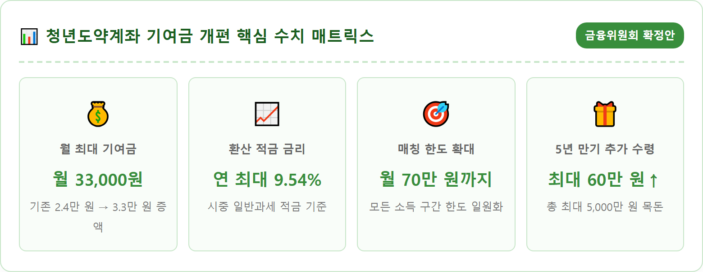
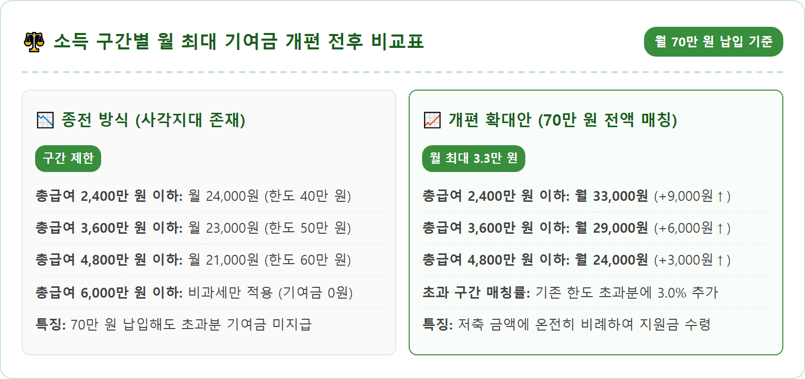
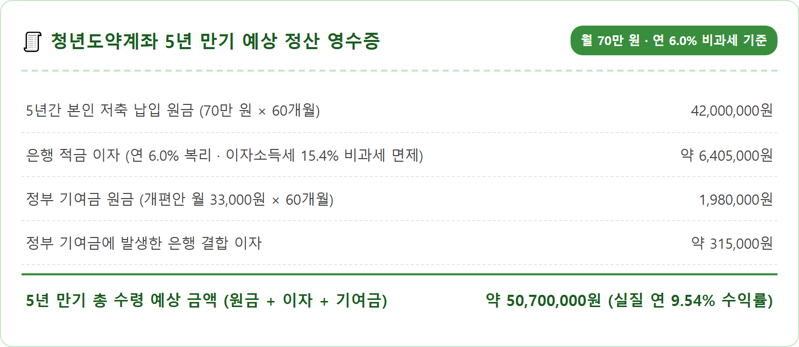
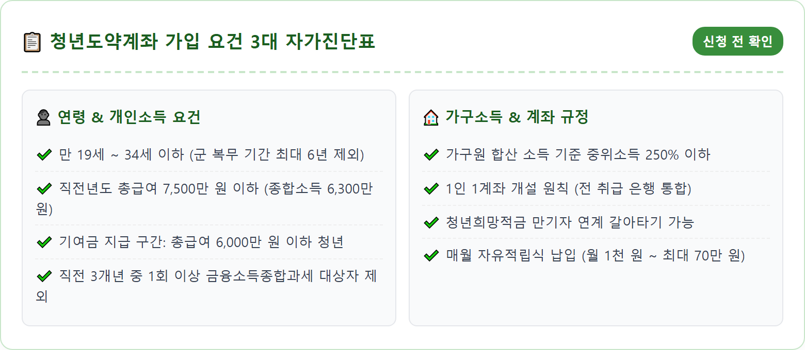
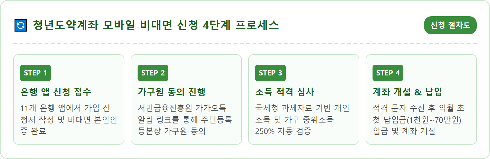
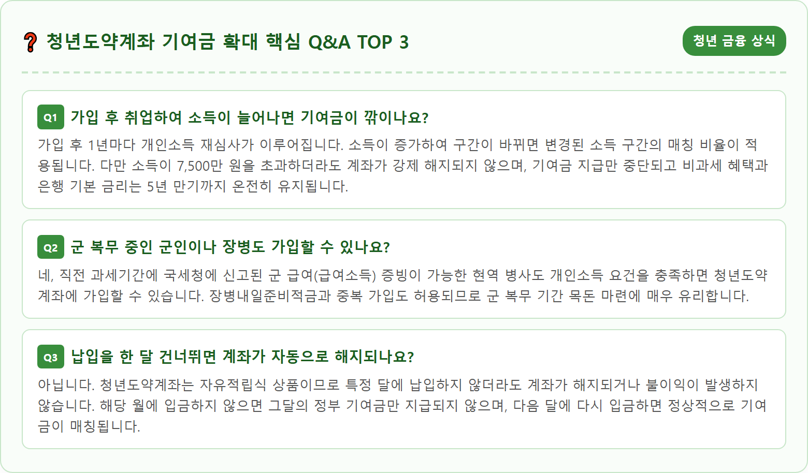

A crisp and modern financial illustration depicting a young South Korean adult checking a digital banking smartphone app showing growing savings balance and government subsidy matching funds. On the desk are neat financial planning charts, calculator, clean notebook, and a small thriving green plant bathed in bright natural sunlight through a window, minimalist aesthetic, warm tones, high-tech financial UI graphics floating subtly, photorealistic, ultra-high resolution, 8k, inspiring financial independence theme, 1:1 aspect ratio.





